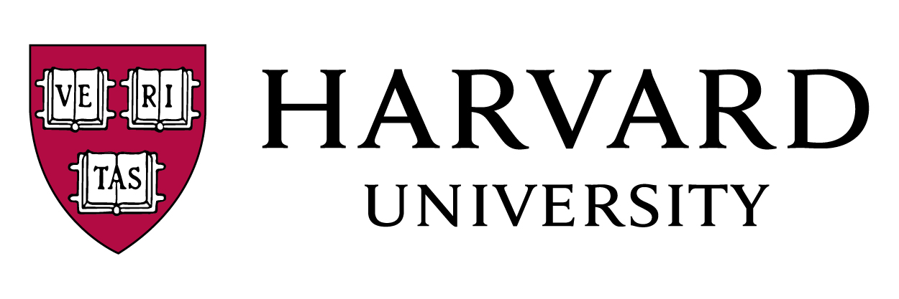

          
                <!-- <p> -->
                    <!-- <i>2019 School of Engineering Henry Booker Award for Exemplary Ethical Engineering</i>
                    <br> -->
                    <!-- My dissertation research created scalable techniques for integrating learning and working for complex activities like scientific experimentation. My research platform Gut Instinct has been used by over 600 people from 30 countries to create novel hypotheses, design experiments, and replicate known results. I was advised by <a href="http://d.ucsd.edu/srk/">Scott Klemmer</a> at <a href="http://designlab.ucsd.edu">UC&nbsp;San&nbsp;Diego Design Lab</a>. I collaborated closely with <a href="https://scholar.google.com/citations?user=_e3QL94AAAAJ&hl=en&oi=ao"> Rob Knight</a> and the excellent community of microbiome researchers and fermenters in San Diego.                     -->
                    <!-- </p>  -->
            <!-- <h4 style="">Published/presented transdisciplinary research at many venues</h4> 
            <p>                   
                <ul style="font-size:110%;">
                <li> Human-computer interaction: <i>ACM CHI, ACM CSCW </i>
                <li> Health: <i>AMIA WISH </i>
                <li> Microbiology, Neurology: <i> American Society of Microbiology, The Cerebellum, MGH Ataxia Center Symposium </i>
                <li> Sustainability: <i> LIMITS workshop at ICT4Sustainability </i>
                <li> Learning and Creativity: <i> ACM Learning@Scale </i>
                </ul>                        
            </p>      -->
                <!-- 2020: 7th International Conference on ICT for Sustainability, Bristol, United Kingdom, June 21-27, 2020" -->

                <!--
                <p> 
                    I pursued my undergraduate degree in Computer Science at BITS Pilani. Apart from HCI research, I have published research creating systems and data structures for efficient integrity checks in databases, low failover time in datacenters, and quick arithmetic operations with novel integer representations. Backpacking across four countries before starting graduate school convinced me that the relation between technology and people was broken across many societies. Consequently, I switched to Human-Computer Interaction research in late 2014.                        
                </p> -->                


                         <!-- <div class="leftmenu">
            <p><b>Travel and Talks</b> 
                <br>Summer 2022: None 
                <br><font style="color:#747678;"> Winter/Spring 2022: Multiple venues at universities and research labs </font>

                <br><font style="color:#747678;">Guest Lectures: 
                <a href="https://raghavan.usc.edu/2020-fall-computing-and-global-change/" style="color:#747678;">USC</a>
                &middot; <a href="https://raghavan.usc.edu/2020-fall-computing-and-global-change/" style="color:#747678;">Northwestern</a>
                &middot; <a href="https://raghavan.usc.edu/2020-fall-computing-and-global-change/" style="color:#747678;">Harvard</a>
                </font>
                <!-- <br>2022:                  -->
                <!-- <a href="https://cscw.acm.org/2021/" style="">ACM CSCW</a>
                &middot; <a href="https://projects.iq.harvard.edu/cnoc-symposium/home"style=""> 3rd Annual Health Data Science Symposium </a> -->            
                          
                <!-- <br>2021 (all virtual): 
                <a href="https://hcic.org/hcic2021/index.phtml" style="color:#747678;">HCIC</a>
                &middot; <a href="https://socialcomputingsystemscamp.wordpress.com/" style="color:#747678;">Social Computing Systems Camp</a>                
                &middot; <a href="https://chi2021.acm.org" style="color:#747678;">ACM CHI</a> (4 min <a href="https://www.youtube.com/watch?v=yZeUILrEGRw">video</a>)
                &middot; <a href="https://www.massgeneral.org/neurology/treatments-and-services/ataxia-unit" style="color:#747678;">Mass General Hospital Ataxia Center Symposium</a> (<a href="talks/2021-05_MGH_Ataxia_Research_Symposium.pdf">Slides</a>)
                &middot; <a href="https://sites.google.com/cornell.edu/healthi" style="color:#747678;">ACM IUI Healthy Interfaces workshop</a>
                &middot; <a href="https://www.mccormick.northwestern.edu/computer-science/academics/courses/descriptions/496-14.html" style="color:#747678;">Northwestern CS Class Guest Lecture</a>                                

                <br><br><b>Program Committee</b>
                <br>Summer 2022: None
                <br><font style="color:#747678;">Recent: </font><a href="https://chi2022.acm.org/for-authors/presenting/papers/selecting-a-subcommittee/" style="color:#747678;"> ACM CHI</a>
                &middot; <a href="https://cscw.acm.org/2022/" style="color:#747678;">ACM CSCW</a>  
                &middot; <a href="https://compass.acm.org//" style="color:#747678;">ACM COMPASS</a>                            
                &middot; <a href="https://dis.acm.org/2021/" style="color:#747678;">ACM Designing Interactive Systems</a>
                &middot; <a href="https://cc.acm.org/2021/" style="color:#747678;">ACM Creativity & Cognition</a>
                &middot; <a href="https://computingwithinlimits.org/2021/" style="color:#747678;">LIMITS</a>                
                &middot; <a href="https://learningatscale.acm.org/las2019/" style="color:#747678;">ACM Learning at Scale</a>                
                <br><b>Organizing</b> ☕ Tea with Interesting People at Harvard HCI
                </p>


            </div> -->  

                                <!-- https://dblp.org/pid/83/7560.html dblp,   -->
                    
                    <!-- Dissertation stuff -->
                    <!-- <br><a href="papers/2019-Dissertation_Vineet_Pandey.pdf">Dissertation</a>
                    <br><b>2019 School of Engineering Henry Booker Award for Exemplary Ethical Engineering</b>
                    <br><a href="talks/Defense_Vineet_Pandey.pdf">Defense Slides</a>
                    <br><a href="https://youtube.com/watch?v=ApvHqU9oDBo">Defense Video</a> -->

                    <!-- <br><br>Thesis proposal: <a href="stash/Thesis-Proposal-Vineet-June-14-2017.pdf"> slides</a>; <a href="https://www.youtube.com/embed/re_yFAJiD0Q">video</a><br> -->
                    <!-- Thesis Proposal: https://www.youtube.com/embed/re_yFAJiD0Q 
                    <a href="#">Bio (soon)</a> <br>-->


                <!-- <br><a href="http://www.linkedin.com/in/pandeyvineet">&nbsp;</a> -->


                   <!-- <b>vineet@seas.harvard.edu</b>   -->                  
                                        
                    <!-- <br><a href="https://hci.seas.harvard.edu/"></a>                          
                    <br><br><a href="http://designlab.ucsd.edu"></a> -->
                    <!-- <br><a href="http://cse.ucsd.edu">&nbsp;&nbsp;</a> -->                    
                    
                    <!-- <br><br>
                    
                    <font size="3"><a href="https://www.youtube.com/channel/UCENv4zYsUl1dxeg346hVVLQ ">&nbsp;src</a></font> -->

                    <!-- <b>I'm on the job market for academic, research, or design positions.</b> -->
                    <!-- <br><b>vipandey@eng.ucsd.edu</b> -->


                    <!-- <h3></h3>                     -->

                    <!-- <br><a href="job/VP_Statement.pdf">Research statement</a>    -->
                    <!-- <br><a href="job/VP_Teaching.pdf">Teaching Statement</a>   
                    <br><a href="job/VP_Diversity.pdf">Diversity Statement</a>  

                     <!-- <br><br><a href="https://scholar.google.com/citations?user=quSxbVgAAAAJ"> Google Scholar</a> -->
                        <!--   -->
                    <!-- <br><a href="http://www.linkedin.com/in/pandeyvineet"> Linkedin</a> -->


                    
                        <!-- news, meh: https://cse.ucsd.edu/about/news/cse-students-and-professors-stage-major-presence-sigmod-2017 -->


